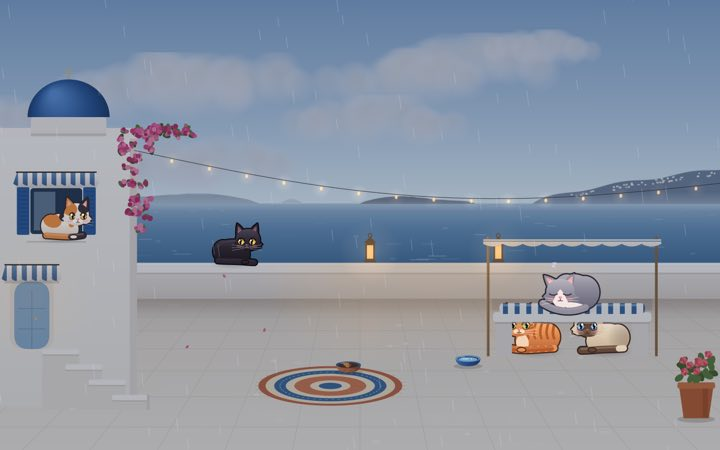
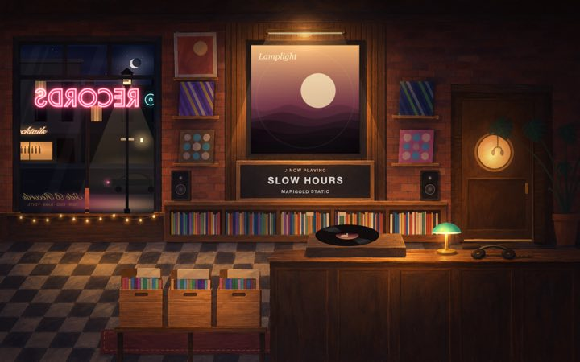
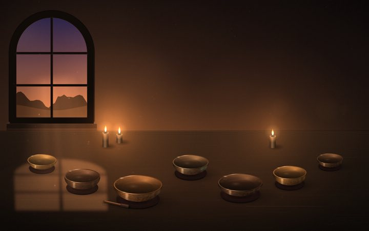
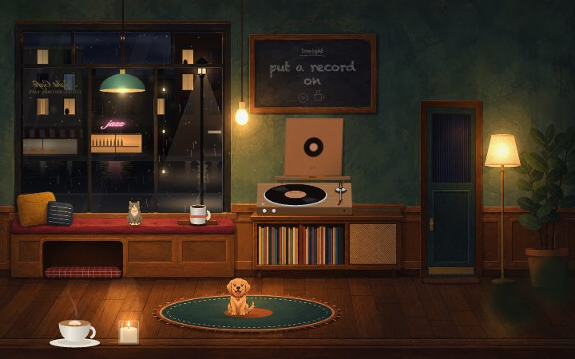
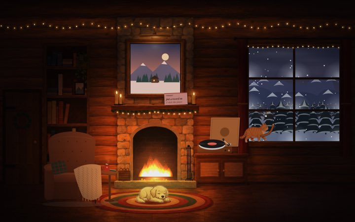
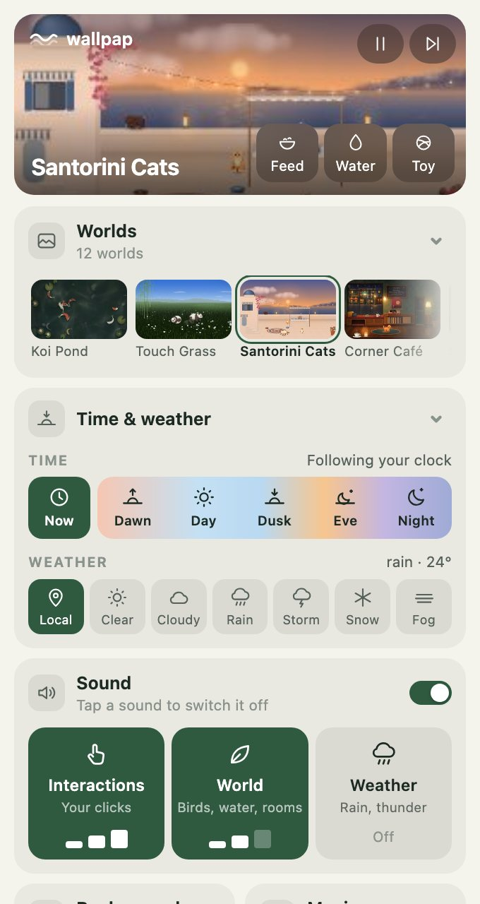
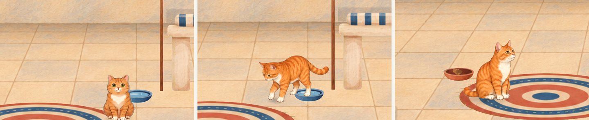
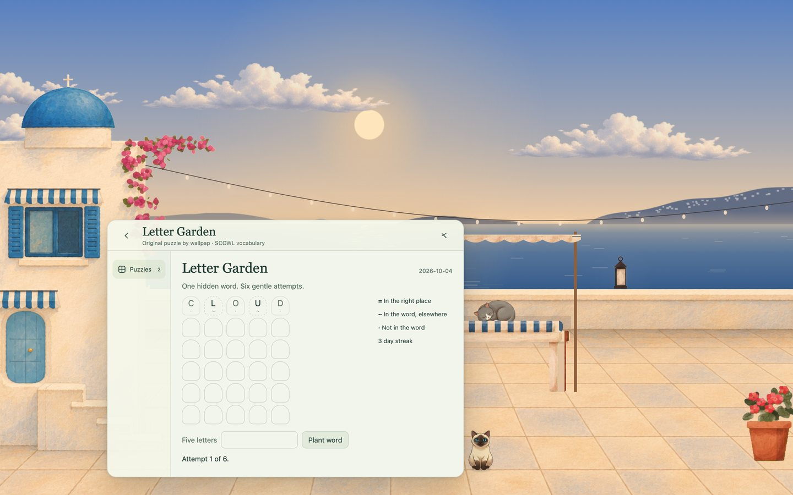

Click the pond and the koi come for the food. Pet the cats, drop the needle, strike a singing bowl. Every interaction is free.

Morning light. Evening rain.
Light follows your real clock, or a slow day cycle drifts by. Pick the weather — or let live weather Pro bring the rain in. Even the moon is in tonight’s phase.

Your music, in the room. Pro
Whatever’s playing in Apple Music or Spotify lands on the record sleeve, the jukebox and the rooftop projector. Beat Sync moves the room with it.

Breathe with the scene. Pro
Calm slows the whole world down and breathes with you — box, 4·6 or 4-7-8 — right there on your desktop.

A sip of water?
A gentle nudge to drink some water. Pro
Reminders appear inside the scene. When your apps cover the desktop, a small card slides in under the menu bar instead.


Everything, one click away.
Scenes, weather, music, calm and energy live in one menu-bar panel. Pause when you’re away or on battery — a paused scene keeps its last frame.
More scenes arrive in the app’s Discover tab as they’re finished — no update needed. Or make your own.
New · Pets
Pick a cat. It follows you.
Tap a cat and it looks up at you, then trails your cursor across the room — walking, running, and pouncing when you hold still. Tap it again and it goes back to its nap. Five cats and two dogs, every one hand-painted, every step drawn.

PickedFollowingWatching your cursor
New · Play
A small break, right on your wallpaper.
Open Play from the menu bar and the scene comes forward with a glass panel on it. The cats keep wandering behind it. Esc, and you’re back to work.
Letter Garden. One hidden word, six gentle attempts. A new word every day, the same for everyone.
Little Crossings. A 5×5 mini crossword with original clues. Check a square, a word or the whole grid.
Works offline, keeps your streak. Every puzzle ships with the app. Your progress stays on your Mac.

Made for your Mac
Lives behind your work. Never in its way.
One panel in the menu bar
Scenes, time of day, weather, sound, music, calm and energy — all in one place, one click away.
Energy modes
Always on, pause when you’re away (after a timer you pick), or pause on battery. A paused scene stays crisp — click to resume.
Keeps clear of your widgets
Scenes move their main action away from your widgets and desktop icons, automatically.
A new scene on a timer
Let wallpap move through your scenes on its own, on a timer you choose. Time of day can follow your clock or drift through a day cycle.
New scenes, no updates
New scenes arrive in the app’s Discover tab — download one with a click. No app update needed.
At home on your Mac
Every display and every Space. Icons stay on top and clickable. Signed and notarized by Apple; no account needed.
Make a scene
Anyone can make a scene.
A scene is just a folder with a web page — plain HTML, CSS and JavaScript, no build step. wallpap shows it full-screen behind your icons, on every display.
my-scene/
index.html the scene
scene.json title, category, your name
thumb.jpg 256 × 160 preview
…assets images, sounds (under ~10 MB)
Drop the wallpap icon onto the Applications folder.
3
Open wallpap
Launch it from Applications. It’s signed and notarized by Apple, so it opens like any other app. The wave appears in your menu bar.
Pricing
Every scene is free.
Each scene comes with its default look and every interaction. Pro adds the rest — once, for $5. No tracking either way: ads are never targeted, and we only count plays anonymously.
Free
$0forever
All 12 scenes, each in its default look
Every interaction — feed, pet, play, strike
Light follows your time of day; pick the weather
Menu-bar panel and energy modes
Keeps clear of your widgets and icons
Every display & every Space
Play — daily word game and mini crossword, with one quiet sponsored line
One-time payment. Your license key arrives by email and works on up to 3 Macs.
Questions
Before you download.
Which scenes are free?
All of them. Every scene — Koi Pond, Touch Grass, Santorini Cats, Corner Café, Snowy Cabin, Record Store, Speakeasy, Rooftop, Ramen Alley, Train Journey, Singing Bowls and Cymatics — is free in its default look, with every interaction. Pro adds the other skins of every scene, plus Music Mode, Calm, reminders, soundscapes, live weather and AI companions.
Are there ads? Do you track me?
wallpap never tracks you. The free version shows one quiet “Sponsored” line in Play — after you finish a puzzle, never in the middle — and it’s chosen by what you’re looking at, not by who you are: no cookies, no identifiers, no ad networks following you around. We count things like “a puzzle was finished today” as anonymous totals, and you can turn even that off in settings. Pro removes the sponsored line.
Is Pro really a one-time payment?
Yes — $5 once, no subscription. Checkout is handled by Dodo Payments. Your license key arrives by email; paste it into the menu-bar panel (Have a key?). One key works on up to 3 of your Macs.
How do I install it?
Download wallpap.dmg, open it, drag wallpap into Applications and open it. The app is signed and notarized by Apple, so there are no security warnings to click through. The wave then lives in your menu bar.
Will it drain my battery?
Pick an energy mode in the menu-bar panel: Always on, Pause when away (after 30 seconds to 30 minutes — you choose), or Pause on battery. A paused scene keeps its last frame, crisp, and costs nothing; click the desktop to resume. You can also cap the frame rate at 20, 30 or 60 fps.
Will it get in the way of my icons and widgets?
No. Your icons stay on top and stay clickable, and drag-and-drop works as normal. Scenes move their main action clear of your widgets automatically, and only react when you click bare desktop — clicks inside your apps never reach them.
How does Music Mode work?
wallpap reads what’s playing in Apple Music or Spotify and puts the track and artwork into the scene — the record sleeve, the jukebox, the rooftop projector. Beat Sync analyses the sound on your Mac and moves the scene with it; your audio is never rerouted.
What about my privacy?
No account is required. Live weather sends approximate coordinates to Open-Meteo (precise location only if you turn it on). Sun and moon calculations, music and beat analysis all run on your Mac. Optional AI companions reflect activity from Claude Code and Codex.
How do I get my normal wallpaper back?
Click the wave in your menu bar and choose Quit. Your wallpaper comes straight back, because wallpap never changes it — it floats a scene above it. To stop it starting with your Mac, turn off Open at login in the same panel.
Which Macs does it run on?
macOS 13 Ventura or later, on Apple Silicon and Intel Macs, across multiple displays and every Space.
The fish are waiting.
Twelve living scenes, free for Mac. Pro is $5, once.